グラフ作成
グラフ作成
グラフを作成する
グラフはデータまたは数学関数から作成できます。Originでは、組み込みのグラフテンプレートを使用して100種類以上のグラフを作成できます。折れ線グラフ、棒グラフといった一般的なグラフから、科学技術分野向けの特殊なグラフまで、幅広く用意されています。
どのグラフを作図する場合も作図メニューから作図できます。ほとんどのグラフタイプは、2Dグラフまたは3Dおよび等高線図ツールバーボタンに対応するボタンがありますが、ボタンがないものもあります。作図メニューからの作図が基本ですが、慣れてきたらツールバーボタンを使用することでさらに素早い操作が可能になります。
ほとんどのグラフは2つの操作だけで作図できます。
- データを選択します。
- グラフタイプを指定します。
いくつかのグラフタイプでは、非常に限定的な構成のデータが必要です。そのほかのグラフは、複数のデータ配列からグラフ作成可能です。特別な要件のグラフについては、 Originのグラフの種類を参照してください。
ワークシートデータからのグラフ作成
グラフ、作成
Originの折れ線、棒グラフ、円グラフといった、一般的なグラフタイプに加えて、特殊なグラフタイプのほとんどはワークシートデータから作成されます。以下に、ASCIIデータファイルのインポートとシンプルなグラフの作成のクイックチュートリアルのデモンストレーションを示します。

|
チュートリアル：選択したデータからワンクリックでグラフを作成する
- 新しいワークブックを開き、メインメニューからデータ：ファイルからインポート：ASCIIファイルを開きます。
- Samples/Curve Fitting/Multiple Gaussians.datファイルを選択し、開くをクリックします。
- 列のヘッダをクリック、ドラッグしてB(Y)、C(Y)、D(Y)、E(Y)の4列を選択します。
- メニューから作図 > 基本の2Dグラフ: 線+シンボルを選択します。4つの線+シンボルプロットのグラフウィンドウが作成されます。線の色とシンボルの種類がプロットごとに異なっています。
- ワークシートに戻り、再度B(Y)、C(Y)、D(Y)、E(Y)を選択します。
- ここでは、メインメニューから作図：複数区分/軸：4区分を選択します。同じデータセットから見た目の全く異なるグラフを作成できます。
|
同じデータから2種類のグラフをすばやく作成できました。グラフ編集の章で、グラフの編集とテンプレートの保存について詳しく説明しています。
ワークシートデータから3Dグラフタイプも作成できます。以下のチュートリアルでは、3D散布図D曲面図を作成後、そのグラフに3D散布図を重ね合わせていきます。
 | キーボードのRキーを押したまま、マウスを使用すれば自由に回転させることができます。ポインタツールをアクティブにした状態で、レイヤをクリックすると、曲面の移動、拡大、回転のためのボタンが表示されます。
|
| 3DグラフのZ軸の長さの最小は10%です（レイヤレベルの作図の詳細ダイアログの軸タブ）。
|
ワークシート列のプロット属性
ワークシートプロット指定列プロット指定プロット指定(X)、 (Y)、 (Z)などの列の見出しは列のプロット属性と呼ばれます。列は、ラベル、無属性、Yエラー、Xエラーにも設定できます。各グラフタイプには特定のデータ要件があります。たとえば、折れ線グラフの場合1つのXデータセットと1つのYデータセットが必要です。あらかじめ列のプロット属性の指定をすることで、グラフテンプレートに保存された設定と連携し、グラフをすばやく作成できます。
列プロット属性を設定するには、1つまたは複数の列を選択し、メニューから列: 設定:<オプション>を選択するか、右クリックして列XY属性の設定コンテキストメニュー からオプションを選択します。
上記の最初のチュートリアルでは、1つ以上のワークシート列からのYデータを必要とする2Dグラフを作成しました。Yデータの左側にあるX属性のデータをXデータとしてプロットされました。2番目のチュートリアルでは、Zデータを使用して3Dグラフを作成しました。その際、Zデータの左側にあるX属性、Y属性の列を使ってZデータがプロットされました。
ワークシートデータの選択
データの選択、ワークシート範囲、ワークシートデータデータ範囲プロットのためのデータ選択ワークシートデータでグラフ作成ワークシートデータのプロット
プロットのためのデータ選択方法は様々です。
- 単一列: B(Y)などの列ヘッダをクリックして選択します。
- 複数列: 隣接する複数の列を選択する場合、最初の列ヘッダをクリックし、最後の列ヘッダまでドラッグします。連続した複数列を選択する場合は、範囲の開始の列を一度クリックし、ワークシートの下部にあるスクロールバーを使って最終列を表示し、SHIFTキーを押しながら最終列の列ヘッダをクリックします。非連続の列を選択する場合は、CTRLキーを押しながら選択したい列のヘッダ部分をクリックして選択していきます。
- 列内の範囲:範囲の最初のセルをクリックし、範囲の最後のセルまでドラッグします。
- 列内の複数範囲: まず1つの範囲を選択します。CTRLキーを押しながら、各範囲を選択します。作図すると、各範囲を別のデータプロットとしてグループ化して作図します。
- 複数の列にまたがる範囲:セルが連続している場合は、最初のセルをクリックして最後のセルまでドラッグします。セルが連続していない場合、CTRLキーを押しながら各範囲を選択します。選択した各範囲を別のデータプロットとしてグループ化して作図します。
- すべての列の範囲:複数の行を選択するには、最初の行の見出しをクリックし、最後の行の見出しまでドラッグします。ワークシートの全列のデータが選択されます。連続しない行を選択する場合は、CTRLキーを押した状態のまま、行のヘッダを選択します。選択した各範囲を別のデータプロットとしてグループ化して作図します。
- ワークシート全体: CTRL+Aキーを押してワークシート全体を選択できます。あるいは、ワークシートの左上にある空のセルにマウスカーソルを合わせます。カーソルが右下向きの矢印に変化したら、クリックするとワークシート全体を選択できます。
- 特定の列: 列ラベル行(ヘッダ行)のデータで列を選択する、または、パターンで列を選択するには、編集: 選択を使用します。
| 上述のワークシート列のプロット属性セクションで説明したように、YまたはZ列を選択すると、Originはデフォルトで左側にある最も近いX列に対してプロットします。あるいは、左側にある最も近いX列とY列に対してZ列をプロットします。ただし、単純なXY 2Dグラフ（折れ線、線+シンボルなど）の場合、この規則を無視して、選択したXがYの左側または右側に関係なく、選択したXY列でプロットすることができます。
|
行列データからグラフを作成
データ行列のプロットデータ行列の作図 行列ブック、行列シート、行列オブジェクト の章に記載したように、行列は、XとYの値が線形にマッピングされた列と行により構成されている、Z値の表形式データです。行列データは、3Dのデータを必要とする、3Dグラフ、等高線図、ヒートマップの作成時に使用します。Originの古いバージョンでは、3Dのグラフタイプは行列データでないと作図できませんでしたが、現在はそうではなく、後述の仮想行列による作図等が可能になっています。エラーバーの付く、カラーマップ曲面グラフのようなグラフには、行列データが必要となります。
行列データから3Dグラフを作成する方法は、数多くあります。ワークシートにあるデータを、行列形式に変換する必要がある場合、ワークシートの行列変換を参照してください。
データを行列形式にすると、簡単に行列データを作図できます。行列ウィンドウをアクティブにして、作図メニューを開き、プロットタイプを選択します。あるいは、3Dおよび等高線グラフツールバーボタンを使います。行列の一部分のみをプロットすることはできないので、データ選択は必要ありません。しかし、グラフを作成してから表示するデータプロットのサブセットを選択することはできます。下記のデータプロットの範囲を編集するをご覧ください。
仮想行列
仮想行列については、 このガイドの行列ブック、行列シート、行列オブジェクトの章に記載しています。簡単に言うと、仮想行列とは、最初の行や列ラベル行、および最初の列にXY座標が用意され、対応するセルにZ値が入力されているようなワークシートセルのブロックのことです。X、Y座標は、等間隔である必要はなく、テキストや日付/時間データが入力されていても問題ありません。仮想行列データのグラフ作成仮想行列データのプロット
仮想行列データを選択して3Dグラフ、等高線、ヒートマップを作成する場合、ワークシートの列属性は無視されます。代わりに、作図時にダイアログボックスが開き、X、Yがどこにあるか設定します。そして、交差するデータポイントがZ値として扱われます。
| 一度編集した等高線レベルや色は、テーマとして保存したり、直接フォーマットのコピー/貼り付けが可能です。テーマとして保存するには、グラフ上で右クリックしてフォーマットをテーマとして保存を選択する、または作図の詳細ダイアログボックスにあるカラーマップ/等高線タブのカラーマップテーマ を使います。
|
2Dと3D関数グラフ
グラフ、関数
プロット関数グラフ、関数関数
2Dおよび3D関数プロット
2Dおよび3Dのパラメトリックプロット
ワークシートデータからのや行列データからのプロットとは異なり、パラメトリックプロットは実際のデータのグラフではありません。それらは数学関数グラフです。
関数グラフ、パラメトリック関数グラフを作成するには、メインメニューのファイル：新規作成：関数グラフを選択します。以下の4つのオプションから選択します。
| タイプ
|
定義形式
|
| 2D関数グラフ
|
y = f(x)
|
| 2Dパラメトリック関数グラフ
|
x = f1(t)
y = f2(t)
|
| 3D関数グラフ
|
z = f(x, y)
|
| 3Dパラメトリック関数グラフ
|
x = f1(u, v)
y = f2(u, v)
z = f3(u, v)
|
関数グラフは、標準ツールバーの関数グラフボタンからも作図できます。
|
|
チュートリアル：同一レイヤに3D関数グラフと3Dパラメトリック関数グラフを作成する
- メニューから、ファイル：新規作成：関数グラフ：3Dパラメトリック関数グラフを選択します。
- 表示されるダイアログで、ダイアログの右上にある矢印ボタンをクリックし、フライアウトメニューから組み込みの例Partial Torus (System)を選択し 、OKを押して ダイアログを閉じます。関数グラフが作成されます。
- 関数グラフのウィンドウをアクティブにして、メニューからファイル：新規作成：関数グラフ：3D関数グラフを選択します。
- X,Yスケールの開始、終了の値をぞれぞれ-5、5に設定します。
- Z(x,y)テキストボックスに、0を入力します。
- ダイアログ左下にあるドロップダウンからアクティブなグラフに追加を選択し、OKボタンをクリックします。
- これで、パラメトリック関数グラフと交差するZ=0の平面が追加されました。キーボードのRキーを押したまま、マウスを使用すれば自由に回転させることができます。
|
- 関数グラフダイアログの一部は、式のサンプルを用意しています。アクセスするには、ダイアログボックスの上にあるテーマの矢印ボタンをクリックします。また、http://originlab.com/3dfunctionsでサンプルをダウンロードできます。
- 2Dパラメトリック、3D、3Dパラメトリック関数グラフの場合、関数グラフを作成すると数値データも作成されます。2D関数グラフデータの作成には、プロットを右クリックして、関数のデータセットコピーを作成するを選択します。または、作図の詳細にある関数タブで、ダイアログボックスの下のワークブックボタンをクリックします。
- 関数グラフの凡例を除外できます。凡例を選択して右クリックして凡例：関数グラフの凡例を非表示にするを選択してチェックを付けると非表示になります。再度表示する場合は、同じメニューを選択してチェックを外します。
- 関数プロットのほかに、すべての組み込み関数およびユーザー定義の非線形曲線フィッティング関数またはサーフェスフィッティング関数を使用してグラフを作成することもできます。メニューから、解析: フィット: 曲線シミュレート...または、曲面シミュレート...を選択します。グラフにノイズを追加することもできます。対応するデータも作成されます。
作成済みのグラフに関数プロットを追加
他のプロットタイプで作成したグラフウィンドウに関数プロットを追加することもできます。具体的な操作は、クイックヘルプのFAQ-171 作成済みのグラフに関数プロットを追加を参照してください。
列のプロット属性を指定せずに作図
列のプロット属性プロット属性ワークシートのプロット属性列のプロット属性は、作図メニューまたはグラフツールバーの1つからグラフを作成するときに常に使用されますが、作図のセットアップダイアログボックスでは使用されません。作図のセットアップでは、ワークシート上の属性に関係なく、作図の際に列の属性を割り当てることができ、テンプレートベースの作図へのいくつかの制限を解消できます。
作図のセットアップダイアログボックスをフルに活用するには、Originグラフウィンドウに入っているオブジェクトの階層を、ある程度知っておく必要があります。
グラフページ
グラフレイヤ
グラフレイヤ枠
レイヤ、グラフ
ページ、グラフ
ページ、レイヤ、プロット、アクティブプロット
グラフページグラフレイヤアクティブレイヤレイヤアイコン、グラフ
Originの各グラフウィンドウは、編集可能な単一のグラフページで構成されています。グラフページは、グラフウィンドウ内部の白い領域のことです。ページ外にある線は表示も出力もされません。デフォルトでは、デフォルトのプリンタードライバーの印刷可能領域でグラフページのサイズが定義されるため、設定を調整しない場合はページ全体にグラフが印刷されます。
- グラフページには、少なくとも1つのグラフレイヤが必要です(レイヤは最大1024枚までです)。
- 各グラフレイヤは、通常1つ以上のデータプロット（データセットをグラフ化したもの）をもちます。上の画像のグラフには3つのレイヤがあるため、グラフのページの左上にあるレイヤアイコンの数は3つです（このアイコンは印刷されません）。ハイライトされているレイヤは、現在アクティブなレイヤであることを示します。
- 1つのグラフには、1つのアクティブレイヤと1つのアクティブプロットがあります。通常アクティブプロットは、アクティブレイヤの第1プロットです。どのプロットがアクティブになっているのかを確認するには、グラフをアクティブにした状態で、メインメニューのデータを開きます。左側にチェックマークがついているのがアクティブプロットです。

グラフページの階層構造は、次の3つの場所で確認できます。
- 作図の詳細ダイアログ（フォーマット：ページ属性）作図の詳細ダイアログ
- オブジェクトマネージャ (表示: オブジェクトマネージャ)オブジェクトマネージャ
- 作図のセットアップダイアログボックス (グラフ操作: 作図のセットアップ...)作図のセットアップダイアログボックス
作図のセットアップダイアログボックス
作図のセットアップダイアログは、グラフ作成はもちろん、作図のセットアップ作図済みのプロットを操作することもできる柔軟なツールです。作図のセットアップダイアログボックス
- 列のプロット属性に関係なくグラフを作成
- 複数のワークシートやワークブック、行列ブック、データセットなどデータソースの組み合わせからグラフを作成します。
- 複数のプロットタイプを統合したグラフ
- データプロットの追加、削除、置換
- データプロットのグループ化/非グループ化
- レイヤ内のデータプロットの順序変更、または、別のレイヤへプロットを移動
作図の設定ダイアログでグラフを作成するには、アクティブなワークシートでデータが選択されていないことを確認し、作成したいグラフタイプを選択します。（作図メニューまたはツールバーをクリックする
次に、既存グラフウィンドウについて作図のセットアップダイアログを開くには、グラフウィンドウの左上にある任意のレイヤアイコンを右クリックして、作図のセットアップを選択するか、メニューのグラフ操作：作図のセットアップを選択します。
|
|
チュートリアル：「作図のセットアップ」ダイアログボックスで折れ線グラフを作成
- 「標準」ツールバーの「新規ワークブック」ボタン をクリックします。
- データ： ファイルからインポート：ASCIIファイルをクリックし、Originのインストールフォルダの\Samples\Curve Fitting\Step01.datをインポートします。B列以降、XデータとYデータといったように、列は実際にはペアになっています。ただし、デフォルトで、インポート時には、すべての列はY属性です。
- データを何も選択せずに、作図 > 基本の2D：折れ線をクリックします。作図のセットアップダイアログが開きます。
- 2つの「二重矢印」ボタンをクリックして、3つのダイアログボックスパネルをすべて表示します。
- パネルの中央部に、B列（Sensor Ax)の「X」ボックスとC列（Sensor Ay）の「Y」ボックスを選択して、下のパネルの追加ボタンをクリックしてレイヤ１にプロットを追加します。
- そして、D列（Sensor Bx)の「X」ボックスとE列（Sensor By）の「Y」を選択して、追加をクリックします。
- F列（Sensor Cx)の「X」ボックスとG列（Sensor Cy）の「Y」を選択して、追加をクリックします。 レイヤ1に3つのプロットが追加されます。
- CTRLキーを押しながら、下のパネルでそれぞれのプロットを選択し、右クリックでグループを選択します。
- OKをクリックすると、グループ化折れ線図が作成されます。
|
|
|
チュートリアル：複数ワークシートデータからのグラフ作成
- 「標準」ツールバーの「新規ワークブック」ボタンをクリックします。
- データ：ファイルからインポート：ASCIIファイルをクリックして、\Samples\Curve Fitting\フォルダからSensor01.dat、Sensor02.dat、Sensor03.dat を選択してファイルをインポートします。インポートすると、3つのワークブックが作成されます。
- データを何も選択せずに、作図 > 基本の2Dグラフ: 線+シンボルを選択します。作図のセットアップダイアログが開きます。
- もしも隠れていたら、二重矢印ボタンを押して上部パネルを広げます。利用可能なデータリストから、フォルダ中のワークシートを選択します。
- 上部パネルでSensor01、Sensor02、Sensor03シートを選択します。
- 中間パネルで、A列(Displacement)の「X」ボックスとB列(Sensor Output)の「Y」ボックスを選択して、追加ボタンをクリックします。
- OKをクリックしすると、3つのワークシートにあるSensor Outputという列を使ったグループ化線+シンボルグラフが作成されます。
|
- 作図のセットアップダイアログの中間パネルでは、一度に1つのX列だけ選択します。
- ワークシートが正しい列属性（XYXYなど）で設定されており、同じロングネームの列が必要なときなど、中間パネルの右上隅にあるトグルボタンをクリックして、プロット可能な列のみ表示するようにします。例えば、2Dグラフタイプの場合、X列が表示されません。列をソートして、同じロングネームの全列を選択し、一括でプロットできるようになります。Yデータは、対応するX属性の列に対してプロットされます。
- データプロットの種類を変えるには、まず下部パネルでプロットを選択します。対応するX列とY列が中間パネルに表示されます。中間パネルの新しいプロットタイプを選択し、置換ボタンをクリックします。
- グループ内の全プロットは同じプロットタイプを共有します。グループ中にある単一プロットのプロットタイプを変更したい場合は、下のパネルのグループノードを右クリックして、非グループ化を先に行います。
- 下部パネルでデータをドラッグアンドドロップして、別のレイヤに移動します。
- 下のパネルが隠れていて、中間パネルの列を選択している場合は、直接OKをクリックして、グラフを作成できます。
データプロットの操作
次のセクションでは、プロットタイプの変更、レイヤからプロットを追加または削除、プロットポイントの密度の制御（スピードモード）など、既存のグラフの高度な変更について説明します。プロットのシンボル、色、凡例の変更のような、グラフの詳細編集については、グラフの編集の章をご覧ください。
グラフタイプの変更
プロットタイプ、変更プロット、交換Originのプロットタイプ(例: 散布図、折れ線図、線＋シンボル) は、選択したその他の既存のプロットタイプと交換可能です。例えば、
- 散布図、折れ線、線+シンボル、縦棒/横棒は相互に変更できます。
- 3D散布図/トラジェクトリ/ベクトル、3D棒、3D曲面は相互に変更できます。
作成済みのグラフのグラフタイプを変更する
- データプロットを右クリックして、ショートカットメニューからプロットタイプの変更：グラフタイプを選択します。
- データプロットをクリックし、フォーマット：プロットを選択して作図の詳細（プロット属性）を選択します。プロットタイプのドロップダウンリストから選択します。
- データプロット上でクリックして、変更可能なグラフタイプのツールバーボタンをクリックします。
プロットタイプを切り替える場合、選択したプロットはプロットグループの一部となり、グループ内のすべてのプロットが切り替えられます。
 | 注意点：これは古いOriginの機能であり、単一レイヤグラフのプロットタイプをすばやく変更する場合はうまく機能します。マルチパネル、マルチレイヤグラフでプロットタイプを変更すると、希望していない結果が生じる可能性があります。より複雑なグラフを操作する場合は、指定したプロットメニューコマンドまたはツールバーボタンを使用して、グラフを直接作成することをお勧めします。
|
データプロットの交換
プロット、追加/削除/非表示プロット指定ワークシートプロット指定列プロット指定
右クリックメニューを使用して、プロットのデータソース（X、Y、ワークシート）を素早く変更できます。データプロット上で右クリックして、以下のオプションから1つ選択します。
- X/Y/Zを変更：このメニューアイテムにより、X、Y、Zデータをプロジェクト内の列データに切り替えられます。
- 列を選択：これにより列ブラウザが開き、現在のフォルダ、現在のフォルダ（再帰的）、現在のプロジェクトにある他の列を選択できます。
- ワークシートを変更：このメニューは、XとYともに、別のワークシートのデータで置き換えます。ここで選択するワークシート列は、既存のワークシートと同じ ショートネーム、同じ列の属性、同じ列の構成、同じ行範囲である必要があります。
|
|
チュートリアル：データプロットに対応するX、Yを変更する
- 新規ワークブックを作成し、OriginのインストールフォルダにあるSamples\Statisticsフォルダ内のautomobile.datファイルをインポートします。
- Gas Mileage列を指定して、メニューから作図: 基本の2Dグラフ: 散布図を選択します。Gas Mileage（燃費） 列は、デフォルトのX列（Year）に対してプロットされます。
- データプロットを右クリックし、Xを変更：Engine Displacementを選択します。 Gas Mileageの列は、Engine Displacement列に対してプロットされます。
|
| Note:変更するデータが、既存グラフのX、Yスケールから大きく外れるような場合、再スケールするかどうか選択する確認メッセージが開きます。データ範囲が似ている場合は、必要に応じて手動で再スケールします（ホットキー：CTRL+R）。
|
| データプロットの分析を実行（例: 自動再計算を設定した線形回帰）する場合、XやY、ワークシートの変更機能でデータを変更すると、フィット結果が自動更新されます。
|
データプロットの追加、削除、非表示
グラフ、プロットの追加または削除
グラフからデータプロットを追加または削除するには、次の方法を使用します。
ドラッグ＆ドロップしてデータを追加する
グラフ、ドラッグ&ドロップでデータを追加ドラッグ＆ドロップでプロット
グラフにドラッグ＆ドロップすることでデータを追加することができます。この方法の場合、作図には、ワークシート列のXY属性が適用されます。
- ワークシートデータを選択します（1つ以上の列または、1つ以上の列を含む範囲）。
- 選択した範囲の左端または右端にマウスを移動します。
- ポインタがこのようになったら
 、左マウスボタンを押したまま、データをグラフウィンドウにドラッグします。マウスボタンから指を離します。
、左マウスボタンを押したまま、データをグラフウィンドウにドラッグします。マウスボタンから指を離します。
- グラフに複数のレイヤがある場合は、データを追加したいレイヤにドラッグして離します。
| ドラッグ＆ドロップで作図する場合、通常、現在のプロットタイプが使用されます。ドラッグ＆ドロップ時のプロットタイプのデフォルト設定を変更するには、メニューから環境設定：オプション...を選択します。グラフタブを開き、ドラッグ＆ドロップ時の作図デフォルトタイプを変更します。
|
挿入:レイヤにプロットでデータを追加
挿入メニューをつかって、アクティブグラフに様々なタイプのプロットを追加できます。プロットタイプの選択は、アクティブグラフウィンドと、直近でアクティブなデータソース（ワークブックあるいは行列）によって異なります。例えば、2Dグラフを作成し、ワークブックウィンドウでデータを選択してから、グラフウィンドウをアクティブにして、挿入:レイヤにプロットを選択すると、サブメニューには折れ線、散布図、線+シンボル、縦棒グラフ、面積グラフ、等高線図が表示されます。
挿入メニューは、既存のグラフウィンドウがないと使用できません。
- ワークシートまたは行列ウィンドウに移動して、データセットを選択します。
- グラフウィンドウに戻り、データを追加するレイヤがアクティブであることを確認して、挿入: レイヤにプロット: プロットタイプを選択します。
レイヤ内容ダイアログでのデータの追加と削除
グラフ、レイヤ内容ダイアログ レイヤ内容のダイアロググラフページの左上にあるレイヤアイコンをダブルクリックまたは右クリックして、レイヤ内容ダイアログを開きます。左パネルで利用可能なデータセットのフィルタとリストが可能です。右パネルでは、アクティブレイヤ内にプロットされるデータセットが表示されます。
ダイアログボックスの中央パネルを制御すると、アクティブなグラフレイヤにプロットを追加したり、プロットを削除したりできます。グラフにデータを追加するとき、下向き矢印のリストボタンをクリックして、グラフタイプを事前に選択できます。右パネルで、レイヤ内のプロットのグループ/非グループ化、プロットの順序変更が可能です。
作図のセットアップダイアログでデータを追加、置換、削除
プロット、追加/削除/非表示作図の設定ダイアログボックスほかにも、作図の設定ダイアログではグラフからデータプロットを追加したり、削除することが可能です。
- グラフにプロットを追加するには、作図のセットアップの上部パネルでソースデータの指定が可能です。
- 中央パネルのコントロールを使用して、プロットタイプとデータ選択の処理方法（X、Y、yError、またはラベル）を指定します。
- 下部パネルで、プロットを追加するレイヤを選択し、追加ボタンをクリックします。
- レイヤからプロットを削除するには、下部パネルでプロットを選択して右クリックし、削除を選択します。
- プロットを非表示にするには、そのプロットの表示のチェックを外します。
- プロットを置き換えるには、下部パネルで置き換えたいプロットを選択し、中間パネルでX、Yデータとグラフタイプを選択して、置換えボタンをクリックします。3D/等高線図/イメージ行列をほかのものに置き換えることも可能です。
ダイレクトASCIIインポートでデータを追加
グラフ、直接ASCIIファイルをインポートするASCIIデータ、グラフをインポートする
ファイルをアクティブなグラフウィンドウに直接インポートするには、単一ASCIIのインポートツールバーボタンを使用します。この方法は、インポートファイルの構造が単純で、シンプルなグラフタイプ（折れ線、散布図、線+シンボル、棒グラフ）の場合についてのみ利用可能です。
- 単一ASCIIのインポートボタン
 をクリックします。ASCIIインポートダイアログボックスが開きます。
をクリックします。ASCIIインポートダイアログボックスが開きます。
- ファイルを選択します。
- 開くをクリックします。
インポート、プロットされたファイルがアクティブグラフウィンドウとされます。
プロットをコピー＆ペーストしてデータを追加
基本の2Dグラフ、例えば散布図、線+シンボル、バブルなどは、既存のグラフレイヤからコピーして他のレイヤ（同じウィンドウ内あるいは異なるグラフウィンドウのレイヤ）に貼り付けできます。Origin 2020より前のバージョンでは、これは黒い線のプロットのみを生成していました。Origin 2020では、シンボルサイズや色などのプロットプロパティを維持しながら、プロットのコピーペーストできるプロットタイプを拡張しました。
- プロットをクリックして選択し、CTRL+Cを押します。
- 目的のグラフをクリックして、CTRL+Vを押します。
グラフ内のプロットを選択して、ミニツールバーのプロットをコピーボタンをクリックしても、コピーできます。
| 以前のバージョンでは、シンプルなグラフ（折れ線、散布図、線+シンボル、2D縦棒/横棒）を選択してコピーし、元のデータをワークシートに貼り付けることもできました。この操作は、デフォルト設定ではサポートされなくなりましたが、LabTalkシステム変数@CPNP = 1を設定することで、戻すことができます。
|
オブジェクトマネージャでプロットを削除/非表示
オブジェクトマネージャ
オブジェクトマネージャは、ドッキング可能なパネルで、グラフレイヤとデータプロットの簡単な操作が可能です。このガイドのオブジェクトマネージャのセクションを参照してください。
プロットを非表示または削除するには、プロットを右クリックしてショートカットメニューから選択します。
- 同じロングネームのプロットを表示または非表示
- 全てのプロットを表示
- グラフウィンドウからプロットを削除します。（非表示のプロットをすばやく再表示できます。削除したプロットは、上記の方法のいずれかを使用して追加し直す必要があります）
- プロットがグループの一部である場合は、個々のプロットを右クリックしてそのプロットだけを削除するか、グループアイコンを右クリックしてプロットグループ全体を削除できます。
- プロットを右クリックすると、同じ名前のプロットを非表示、全プロットを非表示ショートカットメニューアイテムを使用して、選択したプロットを完全に削除することをせずにウィンドウですばやく非表示にできます。（ オブジェクトマネージャ または 作図の詳細（プロット属性）で表示を有効にしてプロットを復元する）
作図の詳細でプロットを削除/非表示
作図の詳細ダイアログボックス（フォーマット：作図の詳細（プロット属性））の左パネルでプロットを右クリックして、コンテキストメニューからプロット除去または非表示を選択します。削除するとグラフからデータプロットが完全に削除されるため、プロットを一時的に非表示にする場合は、非表示を選択します。その場合、ワークシートや行列のどちらからも削除はされません。
Deleteキーでプロットを削除
グラフウィンドウまたはオブジェクトマネージャのいずれかでデータプロットをクリックして選択し、Deleteキーを押します。選択したプロットがグループの一部である場合、グループ全体が削除されます。
これは、グラフウィンドウからプロットグループ全体を削除するという点で、削除ショートカットメニューコマンドよりも簡単です。この操作では、ワークシートや行列のデータを削除することはありません。
削除したプロットを元に戻すには、メインメニューの編集：元に戻す：プロットの削除を選択します。
プロット範囲の編集
一度グラフを作成すると、作図データの一部を指定して、プロットの表示範囲を変更することが可能です。
- プロットを右クリックし、 領域の編集 ショートカットメニューコマンドを選択します。開始と終了の値を変更します。
- 「レイヤの内容」ダイアログ (グラフ操作: レイヤ内容)の右パネルにて範囲を選択します。「範囲」の列が表示されていない場合は、列ヘッダで右クリックして、範囲にチェックを付けます。プロットの範囲セルをクリックして右側に表示される...ボタンをクリックします。
- 作図のセットアップ（グラフ：作図のセットアップ）の下部パネルで、範囲列のプロット範囲をクリックし、その列の右側に表示される…ボタンをクリックします。
データプロットの追加/削除後の再スケール
2Dまたは3Dグラフからデータプロットを追加または削除すると、軸の再スケールが必要になる場合があります。
- Originは再スケールするかどうかを確認します。
- プロットにデータセットを追加または削除する際に使用されるダイアログボックス (レイヤ内容ダイアログなど) には、通常、再スケールのチェックボックスがあります。
- 事前にレイヤを選択し、ミニツールバーの自動再スケールボタンをクリックすることで、自動的に再スケールすることができます。これは、軸ダイアログのスケールタブを開いて再スケール= 自動に設定するのと同じです。
- プロット範囲の編集後にグラフを再スケールするにはグラフ：再スケールして全てを表示を選択します。
データプロットのグループ化
グラフ、プロットのグループ化プロットのグループ化
複数の範囲または列を選択してからグラフを作成すると、Originはグラフレイヤで結果のデータプロットをグループ化します。 これは、1D (統計)、2Dグラフ、3D XYYグラフ(XYY 3D棒グラフ, 3Dリボングラフ, 3Dウォールグラフ, 3Dウォーターフォールグラフ) 、3D XYZグラフ(3D散布図、3D棒グラフ)に適用されます。
グループ化の機能を使うとグループ内の各データプロットは異なる表示属性(線の色＝黒、赤、緑...、シンボル形状＝正方形、円、三角形....)になるので、プレゼンテーション用のグラフが素早く作成できます。 表示属性の割り当ては、事前に決められた(ユーザにより編集可能な)スタイルの推移リストを使って行われます。 たとえば、グループ化折れ線グラフの場合、最初のプロットは黒線、2番目は赤線、3番目は青線のようにカラーリストで定義された順番で表示されます。
|
|
チュートリアル：プロットの手動グループ化(または非グループ化)
- レイヤ内容ダイアログボックスからレイヤの内容ダイアログボックス
- レイヤ内容ダイアログボックスを開くには、グラフウィンドウの左上にあるレイヤ内容nアイコンをダブルクリックします。
- グループ化するには、レイヤ内容リストからグループ化したいデータセットを選択します。選択の際は、CTRLキーまたはSHIFTキーを押しながら選択するか、マウスをドラッグして、複数選択します。
- グループ化ボタンをクリックします。 レイヤ内容にある各データプロット名前の前に"group1"、 "group2"などを意味するgnが付きます。
- グループ化を解除するには、レイヤ内容リストのグループ化データプロットの1つをクリックして非グループ化ボタンをクリックします。
- 作図のセットアップダイアログボックスから作図のセットアップダイアログボックス
- 作図のセットアップダイアログボックスを開くには、グラフウィンドウの左上にあるレイヤアイコンnアイコンをAltキーを押しながらダブルクリックします。
- グループを作成するには、プロットリスト(ダイアログボックスの下のパネル)から目的のプロットを選択します。CTRLキーまたはSHIFTキーを使って複数選択可能です。
- 右クリックして、グループ化を選択します。 プロットリストで選択したプロットについて、グループ化アイコンが表示されます。
- グループを解除にするには、グループ化アイコンを右クリックし、ショートカットメニューから非グループ化を選びます。
|
スピードモード
グラフ、スピードモード スピードモードデータ減少、グラフスピードモードによって、グラフレイヤに表示させるデータポイントの数を制御することができます。 このオプションは大規模なデータセットを操作するときに最もよく使用されていましたが、このオプションは大きく改善され、特に大規模なデータセットを使用した散布図を作成するときなどに使う密度ドットや色付きドットのグラフテンプレートが追加されました。
スピードモードは、様々な2D、3Dグラフで有効にできます。スピードモードが有効な場合、レイヤアイコンは赤く表示され、スピードモード・オンというバナーがレイヤ内に表示されます。 このバナーは、グラフを印刷したり、コピー、エクスポートする際には含まれません。
スピードモードの設定を調整する
- グラフをアクティブにし、メインメニューから、フォーマット：作図の詳細（フォーマット属性）を選択します。
- レイヤ表示方法・描画スピードタブを選択します。
- ワークシートデータから作成されたプロットの場合、ワークシートデータ、曲線当たりの最大ポイント数チェックボックスにチェックを付けると、レイヤ内のすべてのデータプロットのスピードモードが有効になります。テキストボックスに希望の値（n）を入力します。 データプロット内のデータポイントの数がnを超えると、一定の間隔で抽出したn個のデータプロットを含むサブセットが表示されます。
- 行列から作図された3Dデータプロットまたは、等高線データでは、行列データ、次元当たりの最大ポイント数チェックボックスにチェックを付けてスピードモードを有効にします。 XおよびYのテキストボックスに、希望の値(n,m)を入力します。 データプロット内のデータポイントの数がnまたはmを超える場合、Originは最大n×mのポイントで構成されるデータプロットのサブセットを表示します。 サブセットは、行列の列（X）と行（Y)から等間隔に抽出された値で描画されます。
広範な設定を行う場合、グラフ操作メニューのスピードモードを選択します。スピードモードダイアログが開きます。このダイアログでは、設定を適用するグラフを指定できます。また、オフから高およびカスタム化で詳細まで決定することができます。
| グラフ操作ツールバーのスピードモードの有効化/無効化ボタン をクリックして、グラフウィンドウ内の全レイヤのスピードモードを切り替えできます。 をクリックして、グラフウィンドウ内の全レイヤのスピードモードを切り替えできます。
|
スピードモード・オンバナーを消す方法
- メニューから環境設定：オプションを選択してダイアログを開きます。
- グラフタブを開き、スピードモードでウォータマーク表示のチェックを外して、必要に応じてグラフをリフレッシュします。これによりグラフ上のバナーを消すことはできますが、スピードモードは有効なままです。
| ページレベルのミニツールバーで、個別のグラフレベルでのスピードモードバナーの表示を切り替えるボタンを利用できます。
|
スピードモードについての注意
- スピードモードのほかにOriginでは、散布ポイント (線+シンボル図など) のプロットでほかのデータ削減メカニズムを提供しています。作図の詳細のドロップラインタブにある、データポイントの表示制御ドロップダウンで、様々な方法でプロットを体系的にスキップできます (例: 増分でポイントをスキップ )。
- スキップを開始する場所のLabTalkコントロールがあります (例: layer.plot1.symbol.skipstart=10で行10からスキップを開始)。
- ポイントスキップ及びスピードモードを使用したとき、デフォルトで最後のデータポイントをプロットするようになりました。しかし、システム変数@SMEPで設定可能です。
- レイヤーのプロット詳細のレイヤ表示方法/描画スピードタブにあるスピードモードは、画面に表示されているものにのみ適用されます。 デフォルトでは、印刷やエクスポート時にはグラフに適用されません。
- 印刷の際にポイントのスキップをしたい場合は、印刷ダイアログで設定できます。Oiginヘルプファイルの一部のグラフ ウィンドウに適用されるポイントスキップ機能を参照してください。
- エクスポート時にスピードモード設定をしたい場合には、「作図の詳細」ダイアログボックスのその他のオプションタブの処理グループについてのこのディスカッションを参照してください。または、グラフエクスポートダイアログの中のエクスポート設定にある設定も使用できます。
- スピードモードの設定は、グラフテンプレートに保存されます。 特定のグラフタイプでスピードモードの設定を変更したい場合、グラフテンプレートを再保存することで、永続的に変更できます。
- スピードモードの設定を適用するときには、常に注意が必要です。 スピードモードでは、データポイントの一部が体系的に除外されるため、スピードモードがオンになっているグラフは、データを正確に表すことが満足にできる場合とそうでない場合があります。 データが正確に表現されるように、常にデータに精通し、スピードモードの設定を調整および比較してください。
グラフの出力: コピー/貼り付け、画像エクスポート、スライドショー、印刷
完成したグラフを表示する方法はいくつかあります。
- グラフをWordやPowerpointなどのような他のアプリケーションにコピー＆ペーストする
- グラフページをイメージファイル（ラスター形式またはベクター形式）で出力する
- パワーポイントにグラフを送る
- プリントアウトする
- Originでスライドショーにする
- 動画を作成する
詳しくは、このユーザガイドの出版とエクスポートの章と詳細情報を参照してください。
Originのグラフの種類
グラフタイプ
Originは100もの作図タイプをサポートしています。Originの2Dグラフは、ワークシートデータから作図されます。Originの3Dグラフは、ワークシートデータ(XYY、XYZ)、仮想行列のワークシート、または行列から作図されます。
| Originでは、様々な2Dおよび3Dグラフのグラフサンプルを確認できます。グラフサンプル、データ、グラフ作成のガイドラインを見るには、ヘルプ: ラーニングセンターを選択するか、F11キーを押します。
|
作図メニューでは全てのグラフタイプがリスト化されており、カテゴリーごとに表示されています。
-
- 各グラフタイプの作図メニューアイコンはグラフ名の前に表示されます。
- ノートには、データ要件の基本情報を記載しています。より具体的なデータ要件については、作図メニューアイコンの横にあるグラフ名をクリックしてください。
作図メニューのグラフ（カテゴリ別）
| 作図メニューのテンプレートにマウスを乗せると基本のデータ要件が表示されます。
|
基本の2Dグラフ
グラフ、 種類ごとにリスト
棒、円、面積
複数区分/軸
1レイヤ2Y軸
OriginではY軸を二つ持つグラフを作成できます。以前は、2Y軸グラフは2レイヤで作図していました。Origin 2023以降では、「1レイヤ2Y軸」のプロット構成が可能です。この構造での作図は、2D散布図、折れ線グラフ、線 + シンボル ( 前-後グラフなどのバリエーションを含む)、棒グラフ、ボックスチャート、ヒストグラム、および面グラフ等で可能です。新しいGUIコントロールを使って、基本のグラフタイプのテンプレートからこれらのグラフを作成できます。
Origin 2023以降、作図メニュー：複数区分/軸カテゴリに「二重Y軸」と「2Y軸」と2つの行にテンプレートがあり、上が単一レイヤ、下が従来からの2レイヤのテンプレートです。
新しいテンプレートと従来のテンプレートは同様のグラフを生成しますが、従来のテンプレートでは2つのレイヤが作成されるのに対し、新しいテンプレートでは1つのレイヤのみ作成される点が異なります。作図操作はどちらも同じです。
- ワークシートでYデータを2列選択します。
- 作図：複数区分/軸を選択してテンプレートを選択します。
- 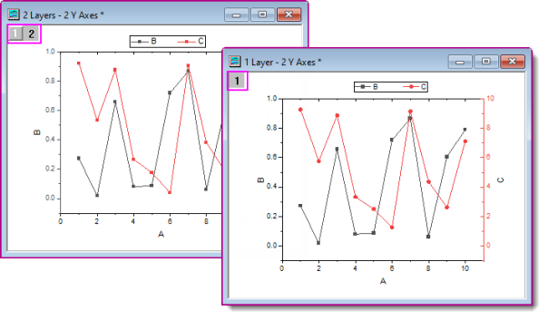
| 「1レイヤ2Y軸」グラフの作成例については、グラフの編集を参照してください。
|
新しい「1レイヤ2Y軸」の構成に追加されたほかの機能
- 作図の詳細ダイアログのグループタブで、サブグループ=軸によるオプションが追加されました。上図のグラフではこの設定を使用していません。代わりに、単一のグループで線+シンボルテンプレートのデフォルトの増分リストをつかって線の色と記号の形状を設定しています。ただし、左右のYプロットを2つの個別のグループに分割して、グループごとに個別の作図の詳細ダイアログのグループタブの設定を利用することもできます。
- 前述のグラフタイプの作図の詳細ダイアログに表示タブが追加されました。データをプロットする軸として左Y軸または右Y軸のラジオボタンから選択できます。
- 二重Y軸グラフの軸ダイアログボックスに各軸を再スケールチェックボックスが追加表示されます。何らかの理由で、2つの垂直軸を個別にスケーリングしたくない場合は、この設定を確認してください。
統計
グラフ、 種類ごとにリスト
等高線図
グラフ、 種類ごとにリスト
| グラフの種類
|
ノート
|
|
等高線図-色付き
 等高線-線+ラベル 等高線-線+ラベル
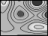 グレースケール等高線
 等高線-カテゴリZ 等高線-カテゴリZ
|
- 等高線図 - 色付き、等高線-線+ラベル、グレースケール等高線、等高線プロファイル：XYZ、仮想行列、行列
- 等高線-カテゴリZ： XYZ、 仮想行列。
- 具体的なデータ要件は、グラフの種類を参照してください。
|
|
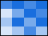 ヒートマップ
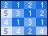 ラベル付きヒートマップ
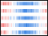 分割ヒートマップ
|
- ヒートマップとラベル付きヒートマップは、ワークシート（XY、XYZ）、仮想行列、または行列から作成します。
- 分割ヒートマップはワークシートから作成します。
- 具体的なデータ要件は、グラフの種類を参照してください。
|
|
 等高線プロファイル 等高線プロファイル
 イメージプロファイル イメージプロファイル
|
- ワークシート、仮想行列、行列から作図します（イメージプロファイルは行列のみ）。
- 具体的なデータ要件は、グラフの種類を参照してください。
|
|
極座標等高線(θ,r)
極座標等高線(r,θ)
|
|
|
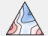 三点等高線図
|
- ワークシートから作図します。
- 列はXYZZを指定する必要があります。
- 具体的なデータ要件は、グラフの種類を参照してください。
|
|
 2Dカーネル密度 2Dカーネル密度
|
- ワークシートから作図します。
- 最低1つのY列あるいは、Y列内のある範囲を選択します。
- 具体的なデータ要件は、グラフの種類を参照してください。
|
|
 イメージプロット イメージプロット
|
- 行列シートから作図します。
- Z値は、インポートされたラスター画像からのものです。
|
特殊グラフ
グラフ、 種類ごとにリスト
カテゴリカル
グラフ、 種類ごとにリスト
| グラフの種類
|
ノート
|
|
 グループ化散布図 - インデックスデータ グループ化散布図 - インデックスデータ
|
- ワークシートから作図します。
- 入力データとして最低1つのY列を選択します。
- カテゴリデータの1つ以上の列には、グループ化情報が表示されます。
- 詳細は、グラフの種類のリンクを参照してください。
|
|
カラーマップ
カラーマップバブル
|
- ワークシートから作図します。
- 関連付けられたX列がある場合はそれを使用し、そうでない場合は、Y列のサンプリング間隔または行番号が使用されます。
- 具体的なデータ要件は、グラフの種類を参照してください。
|
|
 グループ縦棒グラフ - インデックスデータ グループ縦棒グラフ - インデックスデータ
 グループ化浮動棒 グループ化浮動棒
|
- ワークシートから作図します。
- 少なくとも1つのY列（グループ縦棒グラフ）または2つのY列（グループ化浮動棒）を選択します。
- 関連付けられたX列がある場合、それを使用し、そうでない場合は、サンプリング間隔を参照するか、行番号を使用します。
- グループ縦棒グラフ - インデックスデータには、グループ情報を入力した追加の列が必要です。
- グループ化浮動棒グラフの場合は、サイズ（列の数）または列ラベルでサブグループを作成します。
|
|
グループ化したボックスチャート-インデックスデータ
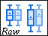 グループ化されたボックスチャート-素データ
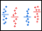 グループ列散布図-インデックスデータ
 グループ列間隔プロット-インデックスデータ グループ列間隔プロット-インデックスデータ
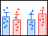 グループ化平均バー-インデックスデータ
 グループ化バイオリン-インデックスデータ グループ化バイオリン-インデックスデータ
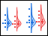 グループ化ハーフバイオリン-インデックスデータ
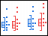 グループ化半ボックス-インデックスデータ
|
- ワークシートから作図します。
- すくなくとも1つのY列（あるいは、その部分領域）とグループ情報を含む列を選択します。関連付けられたX列がある場合、それを使用し、そうでない場合は、サンプリング間隔を参照するか、行番号を使用します。
- インデックスデータのプロットは、グループ化ボックスのすべてのスタイルバリエーションです。
- 詳細は、グラフの種類のリンクを参照してください。
|
|
 トレリスプロット トレリスプロット
|
- ワークシートから作図します。
- 入力データとして最低1つのY列を選択します。オプションで、各Y列に対応するYエラー列を持たせることもできます。他の列はグループ情報を含みます。
- 詳細は、グラフの種類のリンクを参照してください。
|
|
 二重Yトレリスプロット 二重Yトレリスプロット
|
- ワークシートから作図します。
- 入力データとして2つのY列を選択します。オプションで、各Y列に対応するYエラー列を持たせることもできます。他の列はグループ情報を含みます。
- 詳細は、グラフの種類のリンクを参照してください。
|
|
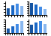 クラスタープロット
|
- ワークシートから作図します。
- 少なくとも2つのY列が必要です。そのうちの1つにはグループ化情報が含まれている必要があります。
- グループ化列を使用して、水平方向または垂直方向に別々のパネルを作成したり、プロットされたポイント(色、シンボルのサイズ、シンボルの形状など)を変更したりできます。
|
|
平行座標プロット
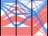 平行座標セット
平行座標インデックス
|
- ワークシートから作図します。
- 少なくとも1列以上の列（理想は2列以上）、もしくは範囲を選択します。列の指定は関係ありません。各列は単一の変数のデータとして扱われます。
- 変数は数値（平行座標プロット、平行座標インデックス）またはカテゴリ（平行座標セット）です。
- 平行座標セットのプロットには、「アルビアルダイアグラム」と呼ばれる「曲率」オプションがあります（次をご覧ください）。
- 詳細は、グラフの種類のリンクを参照してください。
|
|
サンキーダイアグラム
アルビアルダイアグラム
|
- ワークシートから作図します。
- サンキーダイアグラムでは、カテゴリデータの2列+数値データの1列を選択します。列の属性は無視されます。
- アルビアルダイアグラムでは、カテゴリデータの2つ以上の列を選択します。列の属性は無視されます。
- 詳細は、グラフの種類のリンクを参照してください。
|
|
コードダイアグラム
 レイアウト比付きのコードダイアグラム レイアウト比付きのコードダイアグラム
|
- ワークシートまたは仮想行列から作図します。
- 少なくとも3つの列から値の列（ワークシート）または値のブロック（仮想行列）を選択します。
- 最初の列はXとして扱われ、単調である必要があります。
- 詳細については、コードダイアグラムとコードダイアグラム（比率レイアウト）を参照してください。
|
|
 リボングラフ リボングラフ
100%リボングラフ
|
- ワークシートから作図します。
- 少なくとも1つのY列、あるいは、その部分領域を選択する必要があります。
- 関連付けられたX列がある場合はそれを使用し、そうでない場合は、Y列のサンプリング間隔または行番号が使用されます。
|
|
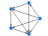 ネットワーク
|
- ワークシートから作図します。
- 作図には、隣接行列、接続行列、または境界リストのいずれかが必要です。
- ダイアログで入力と分析パラメータを指定します。
- データの配置に関係なく、ノードとリンクの情報を表にするための中間ワークシートが作成されます。
|
|
 サンバースト図 サンバースト図
 円パッキンググラフ 円パッキンググラフ
|
- ワークシートから作図します。
- 複数のカテゴリーX列と1つのY列を選択します。
|
3D
グラフ、 種類ごとにリスト
Originの3Dグラフの種類とそのデータ要件の概要については、次のトピックを参照してください。
ブラウザグラフ
グラフ、ブラウザ
グラフ、 種類ごとにリスト
- 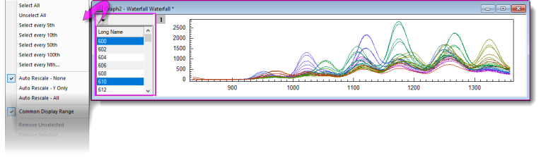
ブラウザグラフは、多くの列（および行）を含むワークシートデータを単一のグラフレイヤに選択的にプロットできます。
- 単一プロットか、N 番目の列毎にプロットを選択できます。
- 選択列は簡単に変更できます。
- 各方向でウィンドウを引き伸ばして見やすい表示が可能です。
- 自動再スケールおよび、全プロットにおける共通の表示範囲を指定できます。
- ガジェットを含む他のOriginの機能を使用可能です。
- 作図の詳細ダイアログでプロットを編集可能です。
- ブラウザグラフは動画 (GIF、TIFF、AVI) としてエクスポートできます。
-
 ボタンをクリックし、めくるを選択します。
ボタンをクリックし、めくるを選択します。
- エクスポートボタンをクリックして、ファイルの種類を GIF、TIFF、AVIにします。
- 必要に応じてオプションを設定してOKをクリックします。設定上オフになっていない限り、メッセージログにエクスポート画像リンクが出力されます。
| ページレベルのミニツールバーには、ブラウザパネルを通常の2D折れ線グラフに追加できるように、グラフブラウザボタンがあります。
|
| グラフの種類
|
ノート
|
|
黒線
色付き折れ線
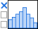 ヒストグラム
 積み上げ 積み上げ
|
- ワークシートから作図します。
- 選択したY列を作図、N 個毎に作図、全列を作図します。
- ブラウザグラフの使用と構成の詳細については、ブラウザパネル付きのグラフを参照してください。
|
関数プロット
グラフ、 種類ごとにリスト
| グラフの種類
|
ノート
|
|
 新規2Dプロット 新規2Dプロット
新規2Dパラメトリックプロット
|
- 関数プロットは物理データから作成されません。
- 関数グラフが作成されると、データセットも同時に作成されます。
- 関数グラフについての詳細は、グラフの種類のリンクを参照してください。
|
|
新規3Dプロット
 新規3Dパラメトリックプロット 新規3Dパラメトリックプロット
|
- 関数プロットは物理データから作成されません。
- 3D関数が作図されると、同時にZ値の行列が作成されます。
- 関数グラフについての詳細は、グラフの種類のリンクを参照してください。
|
ユーザテンプレート
グラフ、 種類ごとにリスト
その他のグラフ作成ツール
グラフ、 種類ごとにリスト
| アプリ
|
ノート
|
|
Graph Makerアプリ
|
- Graph Maker アプリは、Originに既存でインストールされています。
- 作図メニューまたはワークスペース右側にあるアプリギャラリーからアイコンをクリックして使用します。
- グループ化されたデータを相互にプロットして、プレビューで見ながらGraph Makerアプリを使用します。
- 線、散布、線+記号、縦棒グラフ、ボックスグラフ、ヒストグラムグラフの種類から選択します。
- 散布図のフィッティングをサポートします。
- ワークシートの列をドラッグアンドドロップしてグラフを設定します。
- グラフ設定が保存され、再ロードできます。
|
|
 テンプレートライブラリ テンプレートライブラリ
|
- このダイアログを使用して、カスタムグラフテンプレートを整理します。
|
トピックス、追加情報